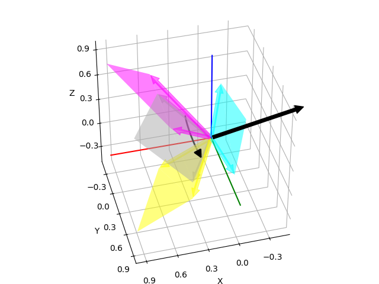

Note
Click here to download the full example code
Plot Bivector¶
Visualizes a bivector constructed from the wedge product of two vectors. The two vectors will be displayed in grey together with the parallelogram that they form. Each component of the bivector corresponds to the area of the parallelogram projected on the basis planes. These parallelograms will be shown as well. Furthermore, one black arrow will show the rotation direction of the bivector and one black arrow will represent the normal of the plane that can be extracted by rearranging the elements of the bivector and normalizing the vector.
print(__doc__)
import numpy as np
import matplotlib.pyplot as plt
import pytransform3d.rotations as pr
a = np.array([0.6, 0.3, 0.9])
b = np.array([0.4, 0.8, 0.2])
ax = pr.plot_basis()
pr.plot_bivector(ax=ax, a=a, b=b)
ax.view_init(azim=20, elev=20)
ax.set_xlim((0, 1))
ax.set_ylim((0, 1))
ax.set_zlim((0, 1))
plt.tight_layout()
plt.show()
Total running time of the script: ( 0 minutes 0.112 seconds)